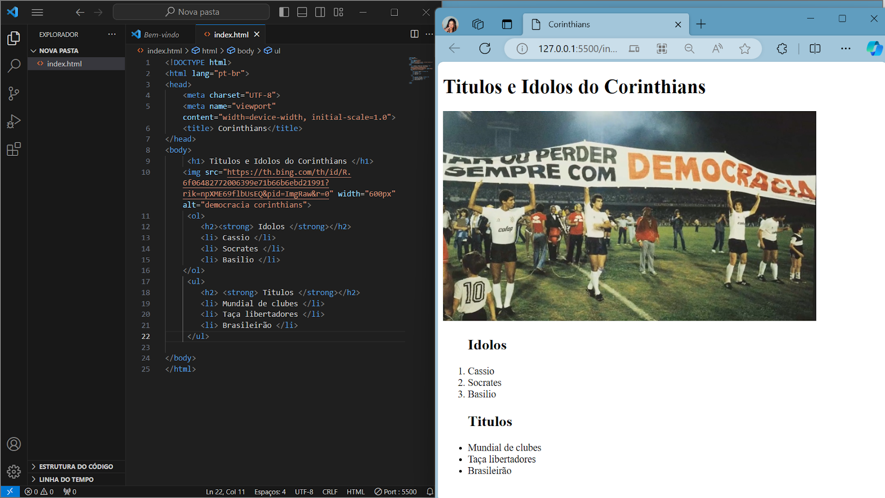

Me chamo Isabelle Vieira Pinheiro, tenho 17 anos, nasci em São Paulo capital, moro com meus pais e meus 3 irmãos mais novos. O que mais gosto de fazer, ir a praia,viajar, escutar musicas, sair com meus amigos, praticar exercicios fisicos, assistir series e filmes, praticar esportes, assistir jogos de basquete e futebol, meu time favorito é o lakers e no futebol o corinthians, amo aprender coisas novas, meu gosto musical é bem eclético escuto de tudo, meus 3 cantores favoritos são the weenkd, justin bieber e sza. Me considero uma pessoa muito perfecionista, criativa, sincera, leal e ansiosa. Tenho muitos sonhos e objetivos e o que me motiva a não desistir deles é a minha familia.
⚫ Gosto de estilizar sites
⚫ Criativa e anteciosa
⚫ Gosto de adquirir novas experiencias e habilidades
Mini projeto em grupo, uma carta para o futuro.
Analisando as estuturas de sites como, linkedin e github.
Atividade: dando uma cara mais pessoal ao codigo:
